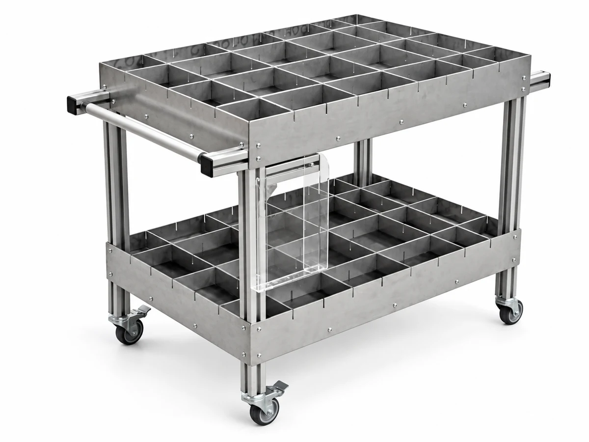
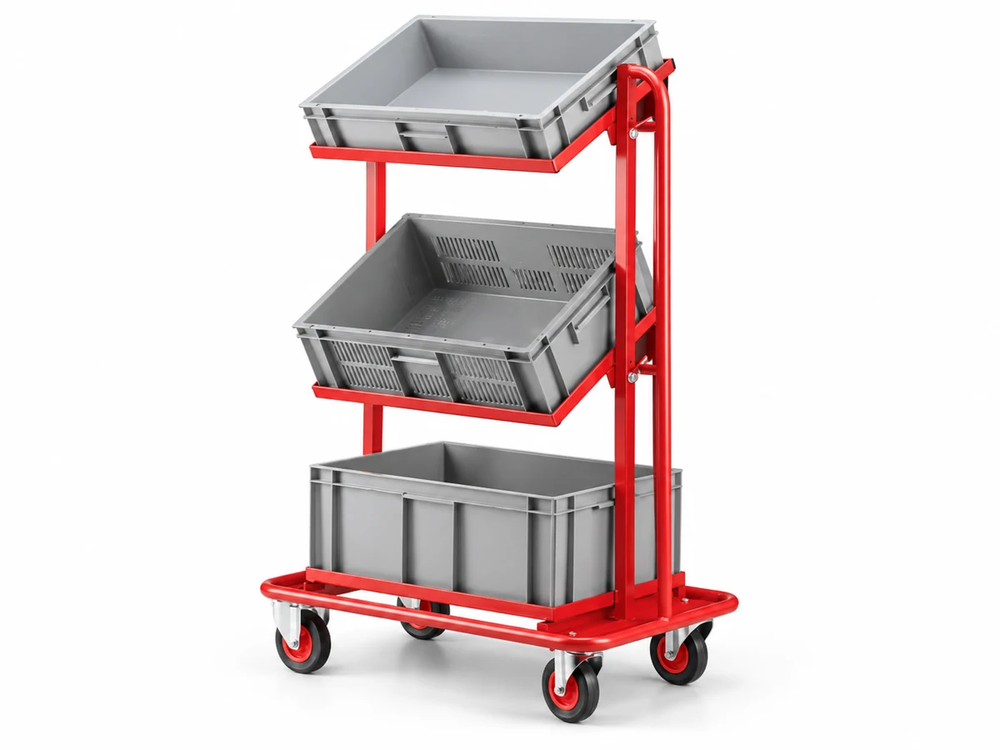
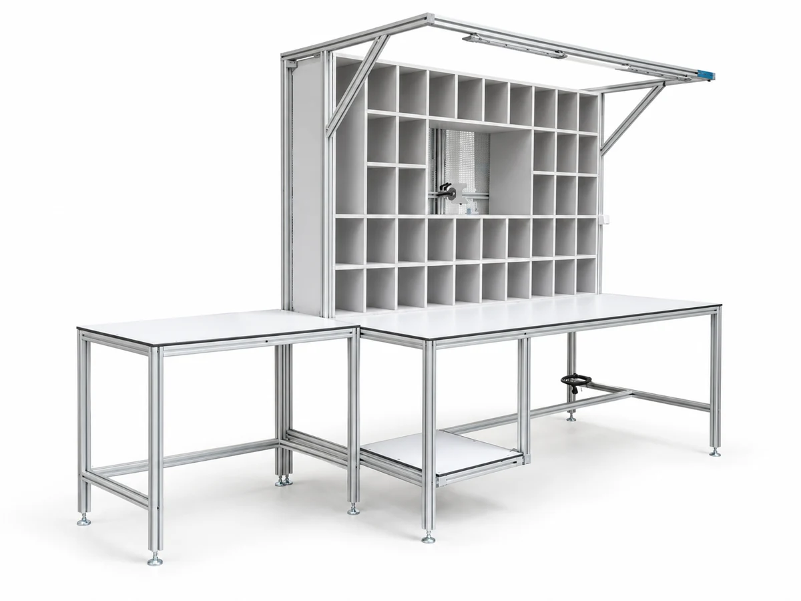
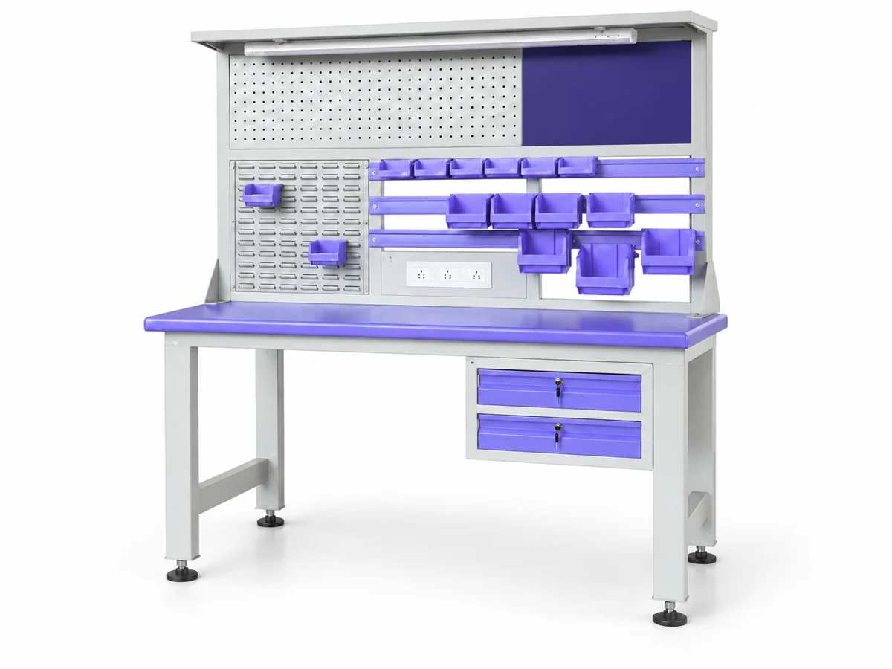

Material Transport Carts
Tiered shelf carts for moving parts and sub-assemblies between stations.
View configurationProducts / Shop-floor storage · Transport
Purpose-built carts, trolleys and storage to organise parts and support material handling.
Discuss your application
Explore the range
Tiered shelf carts for moving parts and sub-assemblies between stations.
View configuration
Mesh-sided carts for visible, ventilated part transport.
View configuration
Cart with roller shelves for easy loading and unloading of cartons and bins.
View configuration
Cart with bin trays for sorting small components.
View configuration
Trolleys with parts bins for organised line-side storage.
View configuration
Multi-level tote-bin trolley for kitting and replenishment.
View configuration
Assembly station with pigeonhole storage for sorted components.
View configuration
Tiered cart with an integrated task light for work at the point of use.
View configuration
Cabinet for secure tool and fixture storage near the workstation.
View configurationPlan the right fit
Which parts, containers and quantities need to be stored?
How will the trolley or storage system travel through the floor?
What loading, access and retention requirements apply?
Useful to shareContainer dimensions, expected loads, and the route between work areas.
Prepare your briefRelated capability
Let’s make it work